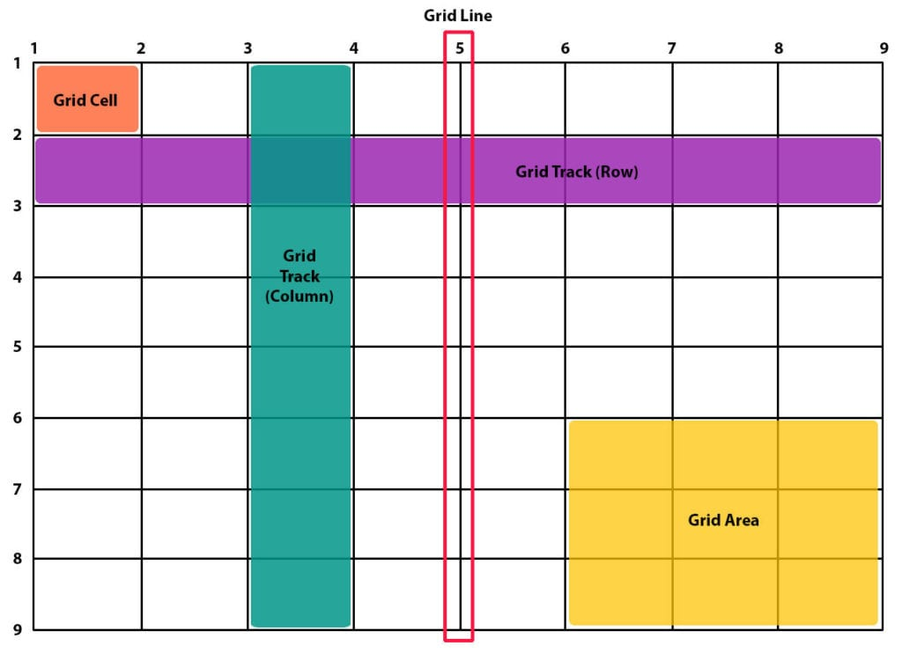

그리드
그리드는 display의 새로운 속성값으로 여러 요소들을 표의 형태로 나타내기 위해 사용됩니다.아래는 그리드를 간단히 그림으로 나타낸 것입니다. 이제 아래를 천천히 읽으며 이 그림의 의미를 이해해 봅시다!

용어 정리
- grid cell: 그리드의 한 칸
- grid line: 그리드의 구분선
- grid area: 그리드의 구역
- grid column: 그리드의 세로선
- grid row: 그리드의 가로선
그리드를 만드는 과정
아래 과정을 통해 그리드를 선언할 수 있다.- display:grid를 통해 그리드임을 지정하기
- grid-template-columns와 grid-template-rows로 행과 열 너비 조정하기
- column-gap와 row-gap로 행과 열 사이 간격 조정하기
- grid-template-areas로 각 grid cell에 grid area를 지정하거나 grid-row, grid-column으로 수동 지정
- 각 grid-area 또는 grid-cell에 CSS style 지정
그리드 여백 조절
그리드의 위치와 grid area에서 내용의 위치도 조절할 수 있다.그리드의 수평 위치는 align-content로, 수직 위치는 justify-content로 조절할 수 있다.
grid area에서 내용의 수평 위치는 align-self로, 수직 위치는 justify-self로 조절할 수 있다.
문법
그리드 지정: display: grid
그리드 크기 지정: grid-template-(columns, rows): [line1] size1 [line2] size2 [line3] size3 ...... (line의 초기값은 1, 2, 3, ......)
그리드 간격 지정: (column, row)-gap: size
그리드 구역 지정: grid-template-areas: "name11 name12 name13 ......" "name21 name22 name23 ......" ......
그리드 구역 수동 지정: grid-(row, column): start end [grid-(row, column)-(start, end)로도 가능]
그리드 구역 지정을 위한 속성: grid-area: name 그리드 여백 조절: (align, justify)-(content, self): flex-start | flex-end | center | space-between | space-around | stretch
size: px 뿐만 아니라 fr도 가능하다. fr은 비율을 나타낸다.
그리드 크기 지정: grid-template-(columns, rows): [line1] size1 [line2] size2 [line3] size3 ...... (line의 초기값은 1, 2, 3, ......)
그리드 간격 지정: (column, row)-gap: size
그리드 구역 지정: grid-template-areas: "name11 name12 name13 ......" "name21 name22 name23 ......" ......
그리드 구역 수동 지정: grid-(row, column): start end [grid-(row, column)-(start, end)로도 가능]
그리드 구역 지정을 위한 속성: grid-area: name 그리드 여백 조절: (align, justify)-(content, self): flex-start | flex-end | center | space-between | space-around | stretch
size: px 뿐만 아니라 fr도 가능하다. fr은 비율을 나타낸다.
예시
아래 예시는, 실제 이 웹페이지를 만들 때 사용된 css 코드입니다.
#main {
display: grid;
grid-template-columns: 300px 1fr;
}
#main #contents {
padding-left: 60px;
padding-top: 30px;
padding-right: 60px;
margin: 0px;
font-size: 20px;
}
#main #article {
padding-top: 10px;
padding-left: 60px;
padding-right: 60px;
padding-bottom: 60px;
border-left: solid 5px gray;
}
display: grid;
grid-template-columns: 300px 1fr;
}
#main #contents {
padding-left: 60px;
padding-top: 30px;
padding-right: 60px;
margin: 0px;
font-size: 20px;
}
#main #article {
padding-top: 10px;
padding-left: 60px;
padding-right: 60px;
padding-bottom: 60px;
border-left: solid 5px gray;
}